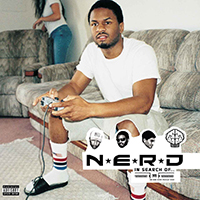

N.E.R.D is a rock and hip-hop mix of everything band formed in 1999 consisting of Pharrell Williams, Chad Hugo and Shay Haley. Selling over 603,000 copies of one album, producing for many artist and solidified themselves as historical figures in music
"I am overly ambitious, because I realize it can be done." - Pharrell Williams
Pharrell Williams was born in 1973 in Virginia Beach. He played the drums throught high school middle and high school, in middle school is where he would meet Chad Hugo at a summmer camp. He continued in high school where he was in the school band, he graduated from Princess Anne High School in 1991. He attended Northwestern University for two years and dropped out. In the early 1990s, Williams started a group called "Surrounded by idiots" which included Chad Hugo, magoo and his cousin Timbaland. Before making any records the group would disband and go seperate ways. Pharrell continued to pursue his carrer and a artist and producer, at one point having produced 43% of songs on the radio, making albums, collaboration projects and movie soundtracks. Furthuring out of rap and producing records for Robin Thicke, Rihanna and Daft Punk.

Charles Edward Hugo was born in Portsmouth Virgina in 1974. He played the Tenor Saxophone throughout school. Not much is known about Hugo in terms of his private life. Hugo founded "The Neptunes" with Pharrell and produced for many artsist throughout his career like Jay Z, Justin Timberlake and more.He learned to play many different instruments. He was inducted into the songwriter hall of fame along pharrell who said this about him "he's himself. He's a savant. Being around him only makes everyone else better" He studied on a music scholarship at Old Dominion University. he was presented the Key to Virginia beach in 2019.
Sheldon Haley was born December 18, 1975. Probably the least known of the trio. is the drummer of the band, also grew up in Virginia Beach, being childhood friends with the other members.Pharrell stated he was the root of the band, and brought everything together. He said in an interview he intentionally kept out of the spotlight, keeping his family and stage life seperate. Haley provided backup vocals, and instrumentals to the group. he is currently married to Jackie Garcia, who is the widow of former NFL player Sean Taylor.
| In Search Of... | Released: August 6, 2001 | In Search Of.. was N.E.R.D'a debut album, named after the tv series "In search Of..". The album contained 13 songs, five features including Kelis and Vita. This album set the bar and inspired many for its nuance and creativity. | |
| Fly Or Die | Released: March 23, 2004 | Fly or Die, N.E.R.D's second album has some interesting things about it, for one, the band learned the instruments on the album to play live at shows. Its listed as "rap rock" which is how I would personally describe it, it went on to qualify for RIAA's gold certifications. A common theme with N.E.R.D but especially with this album is the love or hate behind it. Pitchfork calls it "stupid and boring" rating it a measly 3.1 out of ten. | |
| Seeing Sounds | Released: June 10, 2008 | Seeing Sounds, was a big improvement from 2004's "Fly Or Die". The band believed their previous album was too consistent. After leaving Virgin Records they decided to lean towards a more Pop sounding album. With unique fast-paced beats with so much going on. The album was solely produced by The Neptunes (Pharrell and Chad) with help from Spymob. | |
| Nothing | |
Released: November 2, 2010 | Nothing is the fourth album from N.E.R.D, continuing this new phase of pop and furthuring away from rap, Pharrel saying "So we though why not make a timeless album thats kind of a time capsule". Saying he wanted to make good music that would affect people in a good way. Nothing contains blues,soft rock and more pop, specifically psychedelic pop. The album debuted at 21 on the bilboard 200 chart. |
| NO ONE EVER REALLY DIES | Released: December 15, 2017 | After seven long years N.E.R.D returns, NO_ONE EVER REALLY DIES contains many features like Kendrick Lamar, Rihanna, Andre 3000 and even Ed Sheeran. The album discussed many of Williams political, and econimal feelings of the world, discussing his dislike of former president Donald Trump. "Don't Don't Do It" a song inspired by Keith Scott, who was shot and killed by police in Charlotte North Carolina. They discuss racism and border control. Bringing elements from all previous albums, N.E.R.D comes back well. |
N.E.R.D has many collaborations including Nike, Adidas, A Bathing Ape, Hidden NY, Illesteva and NEIGHBORHOOD. Below are some of my favorite.
| N.E.R.D x Nike |  |
These N.E.R.D nike sb (skateboard) dunks released in 2004. Only one thousand and fifty pairs exist and are they are numbered. Today, people resell them for on average 2000-3000 dollars. It's one of the first collabs Nike did with an artist/group, a reason why they are so sought after. |
| N.E.R.D x Bape | Pharrell has a friend by the name of NIGO, who also made music but his big niche was BAPE, a clothing brand that blew up in hip-hop and in the world and was a staple piece. He created his own design of the Nike air force 1, and called it the "Bapesta". Nike actually tried to sue him for copying but he won(currently they are trying to sue a second time). Pharrell was a big part to their success and so they collaborated to created this shoe. | |
| N.E.R.D x Jacob and Co | The iced-out belt buckle was a one of one item for Pharrell. He always really liked jewlery and had this N.E.R.D buckle made that includes 600 different diamonds. After his time with it, along with many other items, Williams bid this buckle away with a final selling price of 40,000 dollars. |
N.E.R.D's experimental attempts at mixing different genres would in the end play a big role in music. Specifically in Hip-Hop I think their choice to not specialize in just rap, inspired many artist to do the same. With an example being Pharrell, when people bought tickets to go see N.E.R.D, they expected rap, and hip-hop, espicially because of Williams previous music choices, working with snoop dog and others, and even having his first debut album be hip-hop. With the newer age of music we see artist take inpiration from N.E.R.D and their unique sounds, the frenitic drums and horns. We see artist succesful like The Internet, Steve Lacy, Tyler The Creator and A$AP Ferg sample and pay homage to them, even working with them on their own bodies of music. The internet covered "Tape You" from 2001's "In Search Of..." A$AP Ferg has spoken about how he was inspired my them,saying they made "harmless bangers for getting drunk at the club. Comparing the nuance of them to "trying ice cream when you only knew plain yogurt".